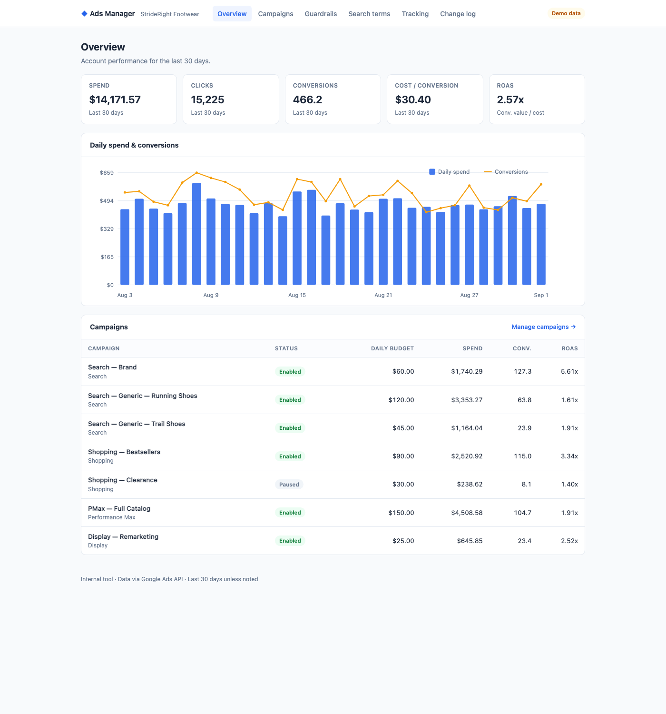

Independent performance marketer running Google Ads campaigns in the e-commerce space.
Planning and running Search, Shopping, and Performance Max campaigns end-to-end — account structure, settings, budgets, and bids.
Ongoing keyword, ad copy, and landing-page testing to steadily improve return on ad spend.
Clean conversion tracking and URL parameter setup so every click is attributed correctly, with clear reporting on what's working.
Day-to-day account work runs on a custom internal dashboard I built on top of the official Google Ads API. It gives me one place to monitor campaign performance, enforce spend guardrails, clean up search terms, and manage tracking parameters across every campaign in the account.

The dashboard is used only by me, on my own advertising account. It keeps routine maintenance — budget checks, negative keyword hygiene, final URL suffix rotation — consistent and auditable, with a change log of every automated action.
See how the tool works →I run paid search campaigns hands-on and end-to-end — from account structure and budgets to ad testing and the tracking behind every click. Keeping the operation small and direct means faster changes, tighter feedback loops, and decisions grounded in real margins rather than vanity metrics.
Where it helps, I use the official Google Ads API to automate routine account maintenance — keeping settings, tracking parameters, and reporting consistent without manual busywork.